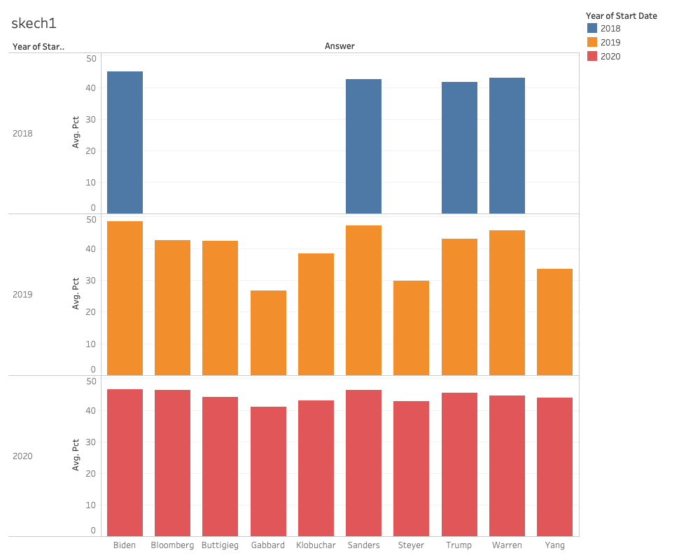

5 insights
- 1. Trump got more and more support rate, but Biden still in the leading postion.
- 2. Trump is gaining more support from California, yet losing support from Missouri and North Dakota.
- 3. Trump's supporters are mainly in the middle parts, and the coast states on west and east are on the contrary.
- 4. Trump always got most sponsors and appeared most in polls, almost 4 times than the second one.
- 5. Republic party has only 1 candidate, which is Trump, and all other candidates are from Democratic party.
skeches
skeches for insight 1:

skeches for insight 2:
skeches for insight 3: